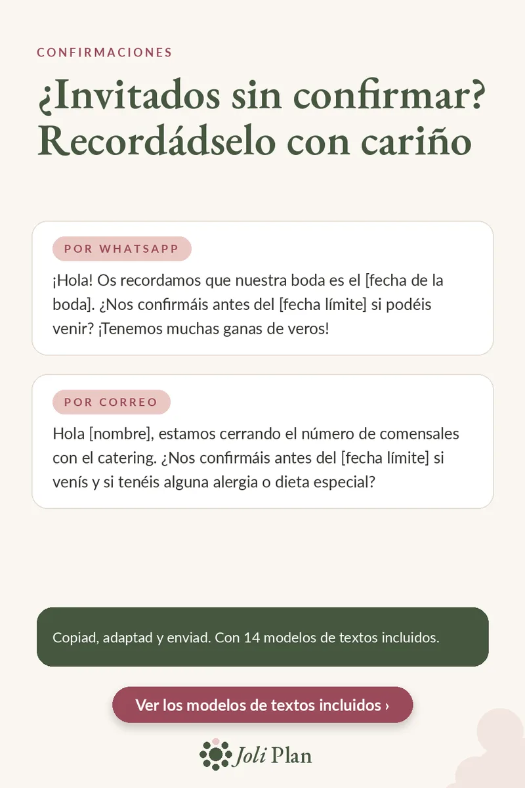

Invitados
Invitados sin confirmar: 2 mensajes para recordárselo
Actualizado el 25/10/2026
Ha pasado la fecha límite y algunos invitados siguen sin responder. Lo más sencillo es un mensaje corto y cariñoso con una nueva fecha. Aquí tenéis dos modelos para copiar.
Ver el planificador de boda en Etsy ›

Por WhatsApp
¡Hola! Os recordamos que nuestra boda es el [fecha de la boda]. ¿Nos confirmáis antes del [fecha límite] si podéis venir? ¡Tenemos muchas ganas de veros!
Por correo
Hola [nombre], estamos cerrando el número de comensales con el catering. ¿Nos confirmáis antes del [fecha límite] si venís y si tenéis alguna alergia o dieta especial?
Cómo usarlos bien
- Sustituid los datos entre corchetes y añadid algo personal.
- Dad siempre una nueva fecha límite: un plazo concreto se respeta más.
- Elegid el canal que use cada invitado: WhatsApp para los cercanos, correo para el resto.
- Apuntad cada respuesta en cuanto llegue, para no preguntar dos veces.